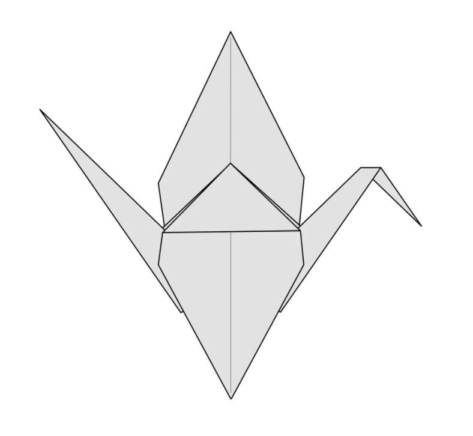
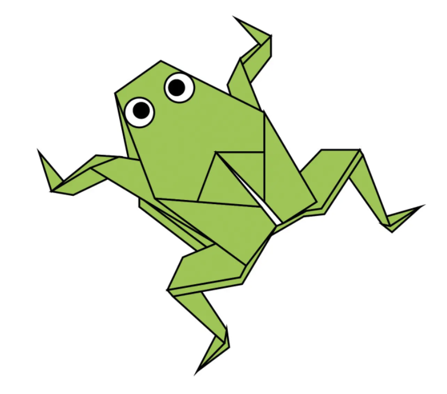

<!DOCTYPE HTML>
<html>
    <head>
        <title>Origami Designs</title>
        <link rel="stylesheet" 
              type="text/css"
              href="style.css"
        >
    </head>
   
</html>
<body>
    
    <div class="header">
        <div class="menu">
            <div><a href="#">☰</a></div>
            <div>Origami Designs</div>
            <div><a href = "about.html"> About Us</a></div>
        </div>
    </div>
    
    <!-- <a href = "followus.html"> Follow Us</a>
    <h3>Click on the images to learn how to make each animal!</h3> -->

    <div class="bodyimg">
        
        <p>
            Origami Instructions and Diagrams
        </p>
        <h3><br>
        Origami is the art of paper folding which comes from Japanese culture. 
        The art of origami can be very soothing and relaxing however, searching for 
        the best origami tutorials can be a hassle. To help you out, we have 
        collected step-by-step tutorials for various origami animals!
        </h3>
    </div>
    
    <div class="grid">
        <div class="origami">
          
            <a href="http://origami.me/camel/"></a>
            <p><b><i>Interesting Facts About Camels</i></b></p>
            <ul>
                <li>There are 2 types of cemels: dromedary(the kind with 1 hump) and Bactrian(the kind with 2 humps)</li>
                <li>Dromedary camels live in North Africa and the Middle East</li>
                <li>Bactarian camels are found mostly in Central Asia</li>
            </ul>
        </div>

        <div class="origami">
           
            <a href="http://origami.me/chameleon/"></a>
            <p><b><i>Interesting Facts About Chameleons</i></b></p>
            <ul>
                <li>Chameleons are a unique brand of the lizard group of reptiles</li>
                <li>There are around 160 species of chameleons</li>
                <li>They live in warm varied habitats from rainforests through to deserts</li>
            </ul>
        </div>

        <div class="origami">
           
            <a href="http://origami.me/pigeon/"></a>
            <p><b><i>Interesting Facts About Pigeons</i></b></p>
            <ul>
                <li>Pigeons are incredibly complex and intelligent birds</li>
                <li>They are highly sociable animals</li>
                <li>They have excellent navigational and hearing abilities</li>
            </ul>
        </div>

        <div class="origami">
          
            <a href="http://origami.me/teddy-bear/"></a>
            <p><b><i>Interesting Facts About Bears</i></b></p>
            <ul>
                <li>Bears eat mostly meat and fish while some species eat plants and insects</li>
                <li>Canada is home to nearly 60% of the world's polar bear population</li>
                <li>Black bears can run at speeds up to 35mph</li>
            </ul>
        </div>

        <div class="origami"> 
           
            <a href="http://origami.me/panda/"></a>
            <p><b><i>Interesting Facts About Pandas</i></b></p>
            <ul>
                <li>Giant pandas are great at climbing trees and can also swim</li>
                <li>An adult panda can eat 12-38kgs of bamboo per day</li>
                <li>They have 6 toes to easily grab bamboo</li>
            </ul>
        </div>

        <div class="origami"> 
           
            <a href="http://origami.me/flying-cicada/"></a>
            <p><b><i>Interesting Facts About Cicadas</i></b></p>
            <ul>
                <li>There are over 3000 cicada species</li>
                <li>They have 5 eyes</li>
                <li>There are billions of cicadas that can be found all over the world</li>
            </ul>
        </div>

        <div class="origami"> 
           
            <a href="https://origami.me/crane/"></a>
            <p><b><i>Interesting Facts About Cranes</i></b></p>
            <ul>
                <li>Cranes can be found on all continents except South America and Antartica</li>
                <li>They live in wedland and grassland habitats</li>
                <li>They range in size from 90-180cm in lenght</li>
            </ul>
        </div>

        <div class="origami"> 
           
            <a href="https://origami.me/traditional-frog/"></a>
            <p><b><i>Interesting Facts About Frogs</i></b></p>
            <ul>
                <li>There are over 4,700 species of frogs</li>
                <li>Many frogs can jump 20x their own height</li>
                <li>They don't drink water from their mouths but instead through their skin</li>
            </ul>
        </div>

</div>

</body>